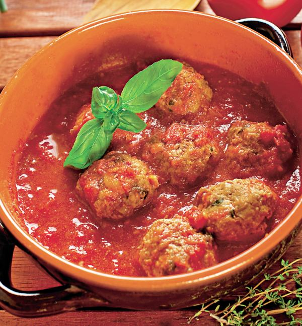
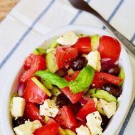
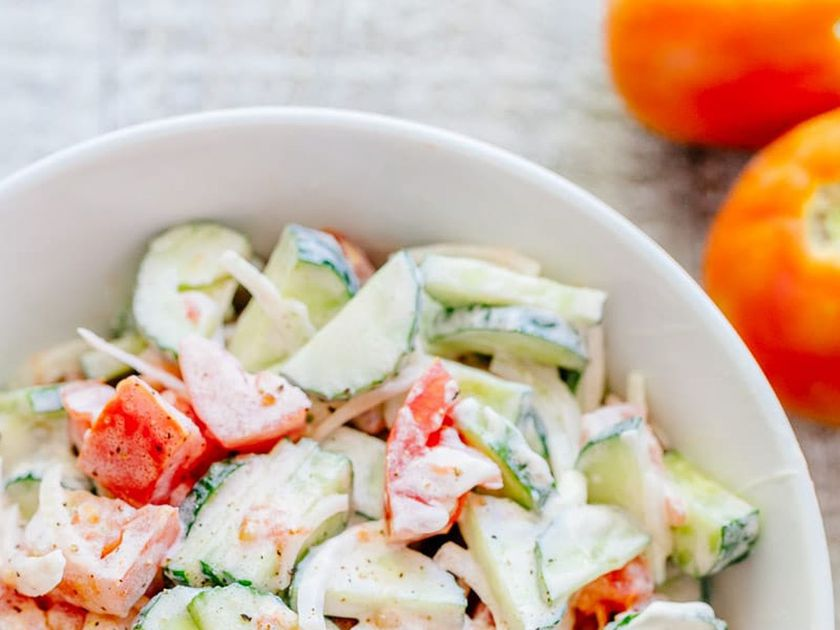

Meniu
Zeamă din găină de casă
50 lei
Ciorbele şi supele de orice fel sunt foarte sănătoase pentru că îţi asigură hidratarea optimă, te ajută să te saturi cu puţine calorii şi conţin multe vitamine dacă foloseşti legume din plin. Zeama este şi mai bogată în vitamine datorită borşului adăugat, cu condiţia să nu îl fierbi prea mult.
Borș scăzut cu costițe de porc
55 lei
Mîncare tradiţională moldovenească, borşul scăzut nu lipseşte de pe masa moldoveanului, chiar şi la o orecare sărbătoare,dar şi în zile obişnuite,intrînd în meniul de bucate zilnice.Acest deliciu se pregăteşte , în special , din costiţă de porc cu grăsime suficientă pentru ca varza murată folisită să aibă destulă grăsime pentru a se îmbiba în timpul fierberii.
Sarmale cu smântână
35 lei
Sarmalele reprezintă unul dintre cele mai apreciate și consumate feluri de mâncare din Moldova. Este un preparat tradițional specific țării noastre, care se poate pregăti după mai multe rețete simple, iar rezultatul final este cu adevărat savuros. Citeşte întreaga ştire: Sarmale - 15 rețete tradiționale de sarmale pe gustul tău
Tocană de porc cu mămăligă
130 lei
Tocanita de porc cu usturoi si suc de rosii sau cricala ardeleneasca se serveste cu mamaliguta sau piure de cartofi. Este o reteta de mancare foarte populara in Moldova si este cunoscuta sub numele de adimoaca sau cricala de porc.
Ciulama de iepure cu fasole roșie
75 lei
Chiar dacă asocierea dintre fasolea roşie şi carne de iepure pare inedită, ea nu are caracter de noutate, fiind destul de populară în America de Sud, acolo unde fasolea ocupă, prin tradiţie, loc de frunte în meniu. În bucătăria noastră, iepurele este distribuit, în genere, în rolul de friptură, de cele mai multe ori însoţită de un sos. Prezenţa sosului este considerată necesară din cauza faptului că iepurele, vietate mai neastâmpărată, are puţină grăsime. Dacă se va întâmpla să vă iese un iepure în faţa portofelului, vă îndemn ca ceva carne de iepure, o treime este suficientă, să o aşezaţi pe fasole roşie pentru că, zic eu, nu veţi avea parte de dezamăgire la masă.
Cîrnăciori la grătar cu muștar
110 lei
Pe cât de clasic, pe atât de bun. Un piure fin și cremos din cartofi albi, alături de cârnaciori condimentați și aromați, prajiți ușor, serviți cu muștar.
Chifteluțe în sos de roșii și piure de cartofi
85 lei Un preparat simplu si gustos ce se serveste neaparat alaturi de garnitura preferata.
Carp prăjit cu mujdei și mămăligă
90 lei
Un pește prăjit corect va avea o crustă rumenă și crocantă și o carne suculentă, lucioasă.
Salată moldovenească cu brînză de oi și masline
55 lei Unii ar numi salata asta “salată grecească”, mai ales dacă o fac cu brânză feta. În mine se revoltă uneori o brumă de naţionalism, ca de exemplu acum şi o să-i spun simplu salată de roşii cu brânză şi măsline. Că sunt convinsă că nu de la greci au învăţat românii să facă salată de roşii şi să pună cuburi de brânză în ea. Şi să fim serioşi, nici nu-i feta lor mai bună decât caşul nostru de vaci sau de oi!
Salată de legume proaspete și smîntînă
55 lei Astăzi, mâncarea sănătoasă este ușoară, mai ales dacă există o salată cu smântână în dieta zilnică. Urmați regula simplă - pentru o salată este mai bine să luați un produs lactat cu un procent redus. Acest lucru va permite corpului sa obtina o sursa de vitamine, iar cifra va mentine frumusetea si forma sa de neegalat.